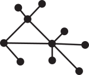
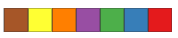

Communication¶
Warning
This chapter is a first draft and may be subject to change.
Communication may be the final step in the IMs workflow but is by no means the least important. The best analysis, using the best data collection methods and tools are worthless if the communication of these findings are insufficient to inform decisions.
How to write about numbers¶
When preparing to write up an analysis, it is important to first consider the following:
Determine your objectives. Is the intention to inform or update a group on recent activities? Is it to provide insight on a particular topic? Is it to change peoples understanding or decisions on an particular operational issue? Is it to engage with people to gather feedback or to take action?
Identify your target audience. What group or groups are you targeting with the above objectives? You will need to tailor the language(non technical experts may not be familiar with technical language), length (shorter messages may be more suitable for general public consumption) and style (different audiences have different lenses in which they will consume and interpret your message).
There are seven basic principles about writing about numbers: 1
Establish the context for your facts. Your text should convey the “who, what, when and where” in which to ground your facts. Don’t just assume that the audience has the same contextual understanding.
Pick simple, plausible examples. Using examples are a good way to transform abstract numbers to more tangible and relatable to the audiences experiences or understanding. An example of this could be used when describing density of the population of Rohingya refugees in Cox’s Bazar, Bangladesh, where comparing the population number and area of the camp can be compared to that of a comparison city familiar to the audience.
Select the right tools and media for the job. The three basic tools for presenting quantitative information: prose, tables and charts. Choosing the most appropriate tool (or mix of them) and understanding their strengths and weaknesses, is important. Equally important is to use the most appropriate mix of media. Eg. Reports, interactive dashboards, infographics, video, social media, events.
Defining your terms (and be careful with jargon). Unnecessary use of of acronyms and jargon will likely exclude parts of your audience or cause misunderstanding due to unshared understanding of concepts. If acronyms must be used, it is good practice to show them alongside their long form at the point where they first appear.
Reporting and interpreting. Describing the numbers around an issue should be support by an explanation of “what does that mean” that explains why that number is important or relevant.
Specify magnitude and direction of an association. Don’t just say “there are more displaced people in camp A than in camp B”, provide a number quantifying how different it is. When explaining the relationship between variables it is also important to be clear on the direction of that relationship. For example “IDPs in Camp A had a lower number of food complaints compared to the previous month”.
Summarize patterns. Rather than presenting a big table or graph showing the data and letting the viewer figure things out for themself it is good to summarize and highlight patterns that contribute to the analysis and message.
Tip
Tell a story
Choose hooks for your audience
Say it visually
Be transparent with the limitations of your analysis
Data Visualization¶
Communicating with visuals can an effective way to communicate a message, either on its own or alongside accompanying text. Good visuals can help engaging the audience and quite often are a good way to convey complex information in a simpler form.
Choosing the right charts¶
When visualising your data, the choice of chart depends on the quantity and type of data you want to represent; the relationships in that data, and ultimately, whether or not the graph clearly communicates your message.2
The following is pseudo-decision tree, to support choosing the most appropriate chart type depending on your data and it relationships.
Deviation¶
Emphasize variations (+/-) from a fixed reference point. Typically the reference point is zero but it can also be a target or a long-term average. Can also be used to show sentiment (positive/neutral/negative).
Examples: Showing the number of people entering or exiting a site over a period of time. Showing satisfaction with a component in a training. Demographics pyramid in a site, showing population breakdown by age and gender.
Deviation chart examples

Diverging bar: A simple standard bar chart that can handle both negative and positive magnitude values.

Diverging bar: Perfect for presenting survey results which involve sentiment (eg disagree/neutral/agree).

Spine: Splits a single value into two contrasting components (eg male/female).

Surplus/deficit filled line: The shaded area of these charts allows a balance to be shown – either against a
baseline or between two series.
Correlation¶
Show the relationship between two or more variables. Be mindful that, unless you tell them otherwise, many readers will assume the relationships you show them to be causal (i.e. one causes the other).
Examples: Showing the relationships between areas of origin and current location of displacement.
Correlation chart examples

Scatterplot: The standard way to show the relationship between two continuous variables, each of which has its own axis.

Column + line timeline: A good way of showing the relationship between an amount (columns) and a rate (line).

Connected scatterplot: Usually used to show how the relationship between 2 variables has changed over time.

Bubble: Like a scatterplot, but adds additional detail by sizing the circles according to a third variable.

XY heatmap: A good way of showing the patterns between 2 categories of data, less effective at showing fine differences in amounts.
Ranking¶
Use where an item’s position in an ordered list is more important than its absolute or relative value. Don’t be afraid to highlight the points of interest.
Examples: Comparing indicators of need. Comparing displacement population figures across sites or districts.
Ranking chart examples

Histogram: Standard bar charts display the ranks of values much more easily when sorted into order..

Ordered column: Same as above but more suited to categories of dates or with short labels.

Ordered proportional symbol: Use when there are big variations between values and/or seeing tne differences
between data is not so important..
Slope: Perfect for showing how ranks have changed over time or vary betweencategories.

Lollipop: Lollipops draw more attention to the data value than standard bar/column and can also show rank and
value ef effectively.

Bump: Effective for showing changing rankings across multiple dates. For large datasets,consider grouping lines
using colour.
Distribution¶
Show values in a dataset and how often they occur. The shape (or ‘skew’) of a distribution can be a memorable way of highlighting the lack of uniformity or equality in the data.
Examples:
Distribution chart examples

Histogram: The standard way to show a statistical distribution - keep the gaps between columns small to highlight the ‘shape’ of the data.

Dot plot: A simple way of showing the change or range (min/max) of data across multiple categories.

Box plot: Summarise multiple distributions by showing the median (centre) and range of the data.

Population pyramid: A standard way for showing the age and sex breakdown of a population distribution;
effectively, back to back histograms.

Beeswarm: Use to emphasise individual points in a distribution. Points can be sized to an additional variable.
Best with medium sized datasets.
Change over time¶
Give emphasis to changing trends. These can be short (intra-day) movements or extended series traversing decades or centuries: Choosing the correct time period is important to provide suitable context for the reader.
Examples:
Change over time chart examples

Line: The standard way to show a changing time series. If data are irregular, consider markers to represent
data points.

Column: Columns work well for showing change over time - but usually best with only one series of data at a time.

Column and timeline: A good way of showing the relationship over time between an amount (columns) and a rate (line).

Slope: Good for showing changing data as long as the data can be simplifed into 2 or 3 points without missing a key part of story.

Area chart: Use with care – these are good at showingchanges to total, but seeing change in components can be very difficult.

Fan chart (projections): Use to show the uncertainty in future projections - usually this grows the further forward to projection.

Connected scatterplot: A good way of showing changing data for two variables whenever there is a relatively clear pattern of progression.
Calendar heatmap: A great way of showing temporal patterns (daily, weekly, monthly) – at the expense of showing precision in quantity.

Priestley timeline: Great when date and duration are key elements of the story in the data.

Circle timeline: Good for showing discrete values of varying size across multiple categories (eg earthquakes by continent).

Streamgraph: A type of area chart; use when seeing changes in proportions over time is more important than individual values.
Magnitude¶
Show size comparisons. These can be relative (just being able to see larger/bigger) or absolute (need to see fine differences). Usually these show a ‘counted’ number (for example, barrels, dollars or people) rather than a calculated rate or per cent.
Examples:
Magnitude chart examples
Streamgraph: A type of area chart; use when seeing changes in proportions over time is more important than individual values.

Bar: See above. Good when the data are not time series and labels have long category names.

Paired column: As per standard column but allows for multiple series. Can become tricky to read with more than 2 series.

Marimekko: A good way of showing the size and proportion of data at the same time – as long as the data are not too complicated.

Isotype (pictogram): Excellent solution in some instances – use only with whole numbers (do not slice of an arm to represent a decimal).

**Radar:**A space-efficient way of showing value of multiple variables– but make sure they are organised in a way that makes sense to reader.

Parallel coordinates: A type of area chart; use when seeing changes in proportions over time is more important than individual values.

Grouped symbol: An alternative to bar/column charts when being able to count data or highlight individual elements is useful.
Part-to-whole¶
Show how a single entity can be broken down into its component elements. If the reader’s interest is solely in the size of the components, consider a magnitude-type chart instead.
Examples:
Part-to-whole chart examples

Stacked column or bar: A simple way of showing part-to-whole relationships but can be difficult to read with more than a few components.

**Radar:**Similar to a pie chart – but the centre can be a good way of making space to include more information bout the data (eg total).

**Treemap:**Use for hierarchical part-to-whole relationships; can be difficult to read when there are many small segments.

**Gridplot:**Good for showing % information, they work best when used on whole numbers and work well in small multiple layout form.

**Venn:**Generally only used for schematic representation.

**Waterfall:**Can be useful for showing part-to-whole relationships where some of the components are negative.
Spatial¶
Aside from locator maps only used when precise locations or geographical patterns in data are more important to the reader than anything else.
Examples:
Spatial chart examples

**Basic choropleth:**The standard approach for putting data on a map – should always be rates rather than totals and use a sensible base geography.

Proportional symbol: Use for totals rather than rates – be wary that small differences in data will be hard to see.

**Flowmap:**For showing unambiguous movement across a map.

Contour map: For showing areas of equal value on a map. Can use deviation colour schemes for showing +/- values

Dot density: Used to show the location of individual events/locations – make sure to annotate any patterns the reader should see.

**Heatmap:**Can be useful for showing part-to-whole relationships where some of the components are negative.
Flow¶
Show the reader volumes or intensity of movement between two or more states or conditions. These might be logical sequences or geographical locations.
Examples:
Flow chart examples

**Sankey:**Can be useful for showing part-to-whole relationships where some of the components are negative.

**Waterfall:**Can be useful for showing part-to-whole relationships where some of the components are negative.

**Network:**Can be useful for showing part-to-whole relationships where some of the components are negative.
Visual Design Principles¶
Developed by German psychologists, the Gestalt laws describe how we interpret the complex world around us. They explain why a series of flashing lights appear to be moving. And why we read a sentence like this, notli ket his ort hat. Understanding these “laws” can be useful in making sure your message is being conveyed effectively.
Law of Similarity¶

The human eye tends to perceive similar elements in a design as a complete picture, shape, or group, even if those elements are separated.
Examples of this could be the use of symbols to signify conflict on a map or the use of colour in dots in a scatter plot that are of the same category.
Law of Prägnanz¶

People will perceive and interpret ambiguous or complex images as the simplest form possible, because it is the interpretation that requires the least cognitive effort of us. Charts should aim to be as complex as necessary and as simple as possible to convey their meaning. Edward Tufte calls this the data-ink ratio.
Law of Proximity¶

Objects that are near, or proximate to each other, tend to be grouped together.
An example of this could be a grouped bar chart where for the funding for each year is grouped by donor.
Law of Continuity¶

Elements that are visually connected are perceived as more related than elements with no connection.
This principle is visible when using a line graph to connect point values.
Law of Common Region¶

Elements tend to be perceived into groups if they are sharing an area with a clearly defined boundary.
This law is perhaps most commonly used in maps, where administrative boundaries are shown with solid or dashed lines.
When presenting static charts a useful tip is to use annotation to guide the viewer through the graph, to put the data in context and to highlight the key relevant facts. 3
Use of Colour¶
When choosing colours in your charts its important to understand possible local significance that may be associated to a specific colour. For instance, in one country a colour may signify good luck, whereas in a different country, the same colour could be associated with a non-state armed group.4
Where possible, special attention should be taken to ensure that chart remain readable when printed in gray scale and that they are colour blind safe, meaning that the chart should not be confusing for people with red-green colour blindness (an estimated 8% of men and 0.4% of women).
Adding to the previous description of the role of color in perception, the use of colour in scales, particularly maps, typically takes one of the following three forms.5
 Continuous(sequential) scales used to show values going from low to high. Eg. population density per district.
Continuous(sequential) scales used to show values going from low to high. Eg. population density per district. Diverging scales which visualize difference from a norm, such as this example showing location in St Vincent that showed both net inward and outward movements of people following the eruption of a volcano.
Diverging scales which visualize difference from a norm, such as this example showing location in St Vincent that showed both net inward and outward movements of people following the eruption of a volcano.Categorical(qualitative) scales used to distinguish different (non numeric) objects eg. a map using different shades for different countries.
Two of the most common ways to respresent colour are RGB and CMYK. RGB, commonly used on websites can be shown as a hex number or RGB number. For printed materials where colour accuracy is important, CYMK is typically used. Not all software supports the CMYK colour space, so if color accuracy is important you may want to use an Adobe tool such as Illustrator or In Design to apply finishing touches to print materials.6
Presenting¶
Having a great data collection system, doing great analysis and creating effective visuals don’t necessarily lead to informing or changing decision by themselves. An important skill for IMOs that is often overlooked is the importance of verbal communication and presentation skills, be in in an in-person context such as a Cluster meeting or as is becoming more common, web-based calls. These meeting offer an important window of opportunity where, if communicated clearly and in a convincing manner a good analysis can meet it’s objectives.
The following video is an example of effective communication, where the speaker shows a clear understanding of his audience(s), succinctly describes the context, the cause, the call for action (giving specific examples) and the urgency and scale.
When presenting slides, consider the following:
Only one idea per slide Having multiple ideas presented will distract your audience and confuse your key message.
Explain your point, then show slide. Your audience can interpret either the visuals on screen or your spoken message. It is very difficult to both at the same time.
Speaker is the star, not the slides. The slides exist to aide the communication of the speaker, not to distract from it.
Never read from the slides. It portrays a lack of preparedness and dilutes the communication rather than complimenting it.
Keep your hands free to move. Not verbal expression can help the audience relate to the message and can help emphasise key messages.
Tell a story to drive home your message Conveying your message through a narrative is a powerful way to introduce your audience with your key points, for them to engage with the topic and to remember it.
Use photos and drawings on slides. Photos can help bring an emotive human element into otherwise abstract messages. Effective visuals can communicate concepts that would be much harder to explain through written or spoken word alone.
Face your audience, not your slides. You are trying to convince, your audience, not the slides.
Avoid complexity. Unnecessary complexity is a barrier for comprehension and can cause your audience to disengage with the topic.
Rehearse, rehearse, rehearse.
- 1
Adapted from The Chicago Guide to Writing about Numbers, by Jane E. Miller
- 2
Adapted from the FTs Visual Vocabulary. A similar graphics decision tree, based on the type and number of variables, is available at Data-to-Viz.com
- 3
Data journalism put increasing emphasis on the need for a good annotation layer, as can be seen by this article from the Financial Times
- 4
ACAPS have a great guide on the Use of Colour in Data Display
- 5
Colorbrewer is a good resource for picking color palettes. Datawrapper have a good blog post describing the use of different colour scales.
- 6
For a detailed explanation of RGB and CMYK and how they differ, see here